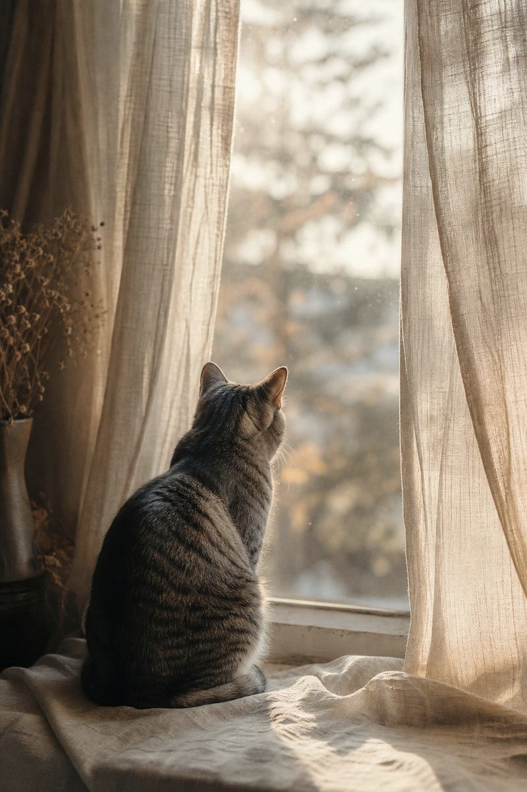

お写真が1枚あれば、
はじめられます。
言葉がうまく浮かばなくても、大丈夫です。
ここは、お別れの手続きをする場所ではありません。
火葬も、埋葬も、供養も、行っていません。
しているのは、その子と過ごした時間を、
あとから見られるページに残すこと。ただ、それだけです。
いちばん長く一緒にいた時間は、
いちばん静かな時間でした。
A QUIET MOMENT ・ 2026
「忘れないでください」とは、
いいません。
思い出したくなったときに、
いつでも開けるページを、
ここに置いておきます。

パスワードも、ユーザー名も、届かない認証メールもありません。 お写真を一枚えらんで、お名前を書く。それだけで終わります。
同じ写真で二重に登録されないよう、こちらで確認しています。 一度登録した写真は、そのまま残ります。
写真を登録する（無料）→
お迎えした日。いちばん長く散歩した日。見送った日。
その日、その場所の空がどうだったかは、天文計算で今も分かります。
月がどれだけ欠けていたか。どの星が頭の上にあったか。 推定でも創作でもありません。誰が計算しても、同じ値になります。
その日の空について→毛の色、模様、目の色、体格。お写真からおつくりするものは、その子の特徴を残すことを最優先にします。別の犬や猫にはしません。元のお写真から大きく離れる加工は、ご希望があったときだけ行います。
思い出ページの掲載に、費用はかかりません。広告も表示しません。「無料」とご案内したあとで請求することは、ありません。クレジットカードのご登録も不要です。
お別れの直後に、高いものを勧めることはしません。ご注文はいつでも、何度でも、数年後からでも大丈夫です。むしろ、そうしていただくほうがよいと考えています。
無料で写真を残せる場所は、日本にも海外にもたくさんあります。
それぞれに良いところがあり、当方にも足りないところがあります。
そのうえで、いいところだけを集めました。
| よくある無料サイト | うちの子の星 | |
|---|---|---|
| 会員登録 | 必要なことが多い | 不要。メールアドレスだけで完了 |
| 写真の枚数 | 無制限、または1枚まで | 1枚から。増やすこともできます |
| 所要時間 | 5〜20分（質問が多い） | 1分。名前と写真だけでも可 |
| 文章が書けないとき | 自分で書く必要がある | いくつか質問にお答えいただければ、こちらで整えます |
| 公開範囲 | 公開／非公開の2択が多い | 3段階（公開・リンクを知る人のみ・非公開） |
| 全国の地図 | 国・州単位のものが多い | 47都道府県。市区町村は表示しません |
| その日の空 | — | 天文計算で再現（NASA / JPL 天体暦） |
| 手元に残す印刷物 | 別サービスか、送料が高い | 記念証・アートパネルを国内から発送 |
| 広告 | 無料の代わりに広告が出る場合がある | 広告なし。お写真の隣に広告は置きません |
| 料金 | 無料、または月額・買い切り | ページは無料のまま。記念品のみ有料 |
| 運営の規模 | 会社・チーム | ひとり。そのぶん、1件ずつ手でつくります |
機能は多いほうがいい、とは思いません。
悲しいときに、たくさんの選択肢は要らないからです。
写真をえらぶ → お名前を書く → 送信。これで終わりです。パスワードも、ユーザー名も、認証メールもありません。
「好きだったこと」「いつもの場所」を、いくつか質問します。答えていただければ、こちらで文章を整えます。ひとことも書かなくても登録できます。
誰でも見られる／URLを知っている人だけ／自分のために非公開。あとから変更できます。住所や市区町村は表示しません。
同じ写真・同じ端末からの重複登録を、こちらで確認しています。一度登録した写真は、そのまま残ります。上書きも、削除も、ご連絡だけで承ります。
ページに、その日の月と星の位置を添えられます。誕生日でも、見送った日でも。NASA / JPL の天体暦による実際の値です。
理由をうかがわずに削除します。無料です。「もう見たくない」も、立派な理由です。
お迎えした日。いちばん長く散歩した日。見送った日。
その日の夜、その場所の空を計算します。
その日、その場所の空がどうだったかは、天文計算で今でも分かります。
月がどれだけ欠けていたか。どの星が頭の上にあったか。
当方が使うのは、NASA / JPL が公開している天体暦です。
推定でも、創作でもありません。誰が計算しても、同じ値になります。
月は南西に低く、ベガは西の空に。
あの子がいた夜は、いつも静かでした。
計算には NASA / JPL の天体暦 DE421 と、ヒッパルコス星表を使用しています。
上記の数値は 2026年11月3日 21時・東京における実際の計算結果です。
お名前と、過ごした年と、ひとこと。
それに、その日の空をつけて、一枚のページにします。
テンプレートに流し込むだけではありません。
お写真を一枚ずつ見て、お名前を一字ずつ確認して、その子のためのページにします。
一日に何件もは受けられません。お待たせすることがあります。ごめんなさい。
そのかわり、送ったページを、あとから黙って消すことはしません。
お住まいの都道府県を選ぶと、そこに残された想いを見ることができます。 同じ地域で、同じように誰かを見送った人がいる。それだけで、少し楽になることがあります。
いま、星が 0 つ灯っています。
掲載は無料です。掲載を希望されない場合は表示されません。 どちらにするかは、いつでもご自身で選べます。
地図をひらく（47都道府県）→
印は「想いが残っている都道府県」です。
地名を押すと、その地域のページが開きます。
アカウント登録も、クレジットカードも必要ありません。
かたちに残したいと思ったときだけ、ご注文ください。
フォームから、お写真を1〜5枚と、お名前・いっしょに過ごした年をお送りください。うまく書けない場合は、分かるところだけで大丈夫です。何も書かずに、お名前だけでも構いません。
その子だけのページをおつくりします。URLをお送りするので、ご家族やご友人にも共有できます。削除もいつでも無料です。
ご希望の場合のみ、お住まいの都道府県に小さな印が残ります。希望されない場合は表示されません。あとから変更することもできます。
ページは、画面のなかだけのものです。
手に取れるかたちにしたい、という方のためのご用意です。
ご家族へ、ご友人へ。
同じ悲しみのなかにいる人へ、そっと渡すことのできるかたちです。
いっしょに暮らしていた方へ。ひとりで見るには、少し重い日があります。同じページを、同じURLで。
お名前入りのカードとパネルは、そのまま贈りものにできます。「おくり主」の名前も入れられます。
お迎えした日、いちばん長く散歩した日、見送った日。記念証の日付は、どの日でも構いません。
いただいたお言葉の一部を、許可をいただいて掲載しています。
※ 掲載準備中のため、以下は文章の例です。
正直、こんなに早く終わると思っていませんでした。写真を一枚選んで、名前を書いただけ。それなのに、届いたページを見たときに、ちゃんと泣けました。
書くことが何も浮かばなくて、下書きのまま三日ほど閉じていました。ひとつだけ質問に答えたら、あとは向こうで整えてくれて。助かりました。
記念証の日付を、見送った日ではなく、うちに来た日にしてもらいました。そっちのほうが、うちの子らしいと思ったので。
思い出ページの掲載は無料です。掲載だけをご希望の場合、費用は一切かかりません。クレジットカードのご登録も不要です。
記念品は、ご自身でお申し込みいただいた場合のみ有料となります。「無料」とご案内したページについて、あとから請求することはありません。
「その日の空」記念証は、お生まれになった日、ご結婚記念日、お見送りした日など、人についてもおつくりしています。お写真からのアートパネルも同様です。
ただし、当方では葬儀・供養の代行は一切行っておりません。詳しくは特定商取引法に基づく表記をご覧ください。
スマートフォンで撮ったお写真で大丈夫です。顔がはっきり写っているもの、全身が写っているものが仕上がりがきれいです。1〜5枚ほどお送りください。
お写真が古い・少ない場合でも、お作りできます。その場合はご相談のうえ、できる範囲でご提案します。
アートパネルの制作過程で、画像処理および生成のためのAIツールを使用する場合があります。使用した場合は、制作前にお伝えします。
「その日の空」記念証の数値は、AIによる推定ではなく、NASA / JPL の天体暦とヒッパルコス星表を用いた天文計算によるものです。同じ日時・地点であれば、誰が計算しても同じ値になります。詳しくはAI利用に関する方針をご覧ください。
いいえ。掲載はご希望された場合のみです。お申し込み時にお選びいただけます。掲載後も、ご連絡いただければいつでも削除します。
記念証（PDF）は、ご入金確認後おおむね3日以内にお送りします。アートパネルは、仕上がりのご確認をいただいてから印刷・発送となり、おおむね2週間ほどです。
お急ぎの場合、状況をお知らせいただければ可能な範囲で調整します。
銀行振込、またはクレジットカード決済（決済リンクをお送りします）をお選びいただけます。お申し込み後にご案内します。お支払いは制作開始前のご入金となりますが、制作開始前であればキャンセルは無料です。
はい。掲載は無料のまま残りますので、数か月後、数年後でも構いません。むしろ、そうしていただくほうがよいと考えています。
できません。当方は火葬・埋葬・供養・納骨に関する一切の役務を提供しておりません。ペットのご葬儀については、お住まいの自治体の窓口、または各地のペット霊園・火葬サービスにご相談ください。
当方がおつくりするのは、思い出の記録と、その記念品です。
こもれびアトリエは、ひとりで運営している小さな制作の場所です。大量生産も、店舗も、たくさんのスタッフもいません。
だからこそ、お写真を一枚ずつ見て、お名前を一字ずつ確認して、その子のためのページをつくることができます。ご注文が重なったときは、お待たせしてしまうこともあります。ごめんなさい。
この仕事は、なくなったものを売る仕事ではありません。その子がいた時間を、かたちにする仕事だと思っています。
お写真を、ていねいに扱うこと。お名前を、間違えないこと。送ったページを、あとから黙って消さないこと。ご注文の前に、仕上がりを見ていただくこと。
それだけです。それだけを、守ります。